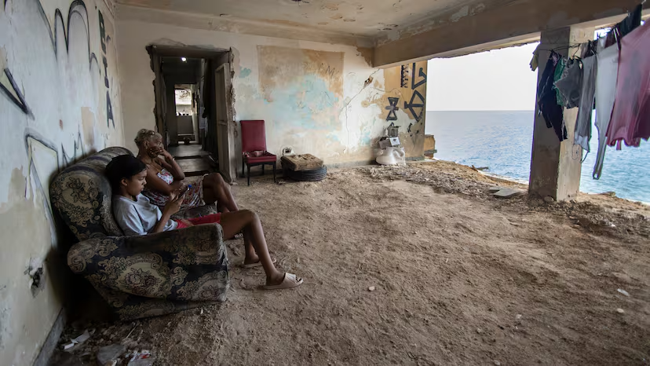

Yuneily Villalón, de 44 años, en un espacio que adaptó para poder vivir.Marcel Villa
Carla Gloria Colomé|Nueva York
Pese a que la narrativa oficial procura huir de la palabra pobreza, la desigualdad que los revolucionarios prometieron erradicar es cada vez más patente